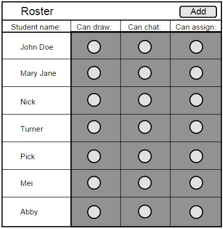
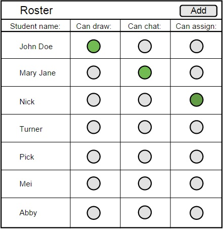

Within the main roster layout, the user has the option to control different privileges that a certain student may have. That could be the ability to draw on the main presentation, the ability to chat with other students via the Chatbox, and finally the ability to administrate the class.
Initially, all students will be denied any privileges. In terms of the roster, the three circles to the right of their name on the roster will be red. If any privileges are to be given, the user will have to click the circle indicating which privilege should be allowed, and that circle will change color into green.
Drawing and chatting privileges will not affect the main roster layout.
Giving administrative privilege will.
A student who has been assigned admin privileges will have a roster layout thats exactly
the same as the instructors.

Figure 1: Student's roster view

Figure 2: Assigning students privileges as an admin